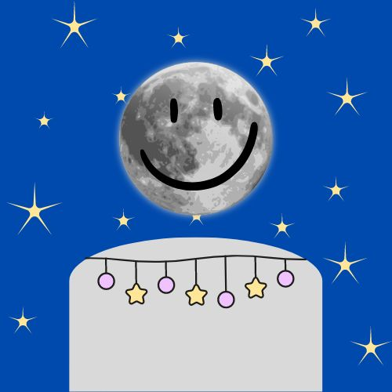

Oscar Barron Jr
Student at Dallas College
The creator of this website
Skills:
Adobe Photoshop - 70%
Photography - 60%
Illustrator - 85%
Media - 70%
Languages:
English - 100%
Spanish - 20%
My thoughts and experience in the Web Design Tools course
Course Experience
Hello there, I am the true creator and developer of this website. My name is Oscar Barron Jr, and I am a college student at Dallas College. Making this website was part of my course in Web Design Tools, it follows as proving this very website with content, html, css, layouts, etc. I have been taught a lot of things since in this course since June 2024, one of things was typing out the code with Visual Code Studio. Every time I add in some new features, I just save it and name the changes into the source control like "about us" for an example. But it was more than that, I go back and forth with GitHub where I can see all my new updates to my website. But it is not rare to see if there are any errors or mistakes that I made, so I went to use Html Validator, CSS Validator, and Wave accessibility Checker to see those errors for me to fix. I did it all in my Window 11 laptop, it was hard trying to get used to it in this class, but I manage to adjust myself with it as the days go by. It is also where I can store the files of my website in, with images included, as well as my repository. Which holds all my code in and makes my website appear in your screen. I had a wonderful time building this website and being able to show it to millions of people around the world, that is if I am lucky for anyone to see this. But nonetheless, I am proud of what I created, and I am going to miss this Web Design Tools class to be honest. But hey, I am growing to become a web developer, and this is just another chapter of my life.
Career Goals
For what I want to have a career in, is to become a web developer. It is an option that I feel like I can come up with what I want to be in the future. I had other plans, but they didn't go up to what I was expecting. This career path was inspired when I was in high school where I had plenty of coding class, but the major inspiration was making a website for my art gallery. I did sketch and painting back then and one of the assignments was to design a website where I can show off my art works. I actually have a link for you all to see, you can visited it now on this page with a provided link to visit". Back to the main subject, I had fun making as my first website, so I decided to see what my future will take me into making it as part of my career. So far, in my experience with this course, it was hard at first. But the progress that I made and seeing how much I did right motives me to keep going. It was wonderful to see how far I had gone to where I am now. The class, Web Design Tools, will help me achieve my professional goals with the experience and skills that I developed. I will start to get more familiar with coding and designing for it to become a breeze for me. Every method and technique I know will always be of use to me when I take more coding classes. I am getting steps closer into becoming a profession, even if the steps are miles long, I am still taking those steps. Because I am motived to never give up after everything I worked for. Only until then will I walk out of his campus with a diploma in my hands and move forward into a university I may not know what future lies ahead of me and its rocky roads. But I know that I can make it, I have a lot of people who will support me into it, even my teachers and classmates. I am thankful to have this opportunity to go where I am now, working on this page as my last day in this class. I can't wait to see what comes next in my education, and to improve more as a hard-working student. I hope you have a great day every day, Farewell.
'Link to my old Art Gallery'
I will make a new page on this website where its dedicated to my artworks, I might even remodel it here. It will take a while since I'll be on vacation without my laptop. I don't want it to break while on my travel since it just got paid off fully. I promise that it will come soon. If you like, you vistit my contacts page there so at least I know someone likes my works. It can encourage me to work more on my artwork or anything.
[ Oscar's Astounding Artwork ]